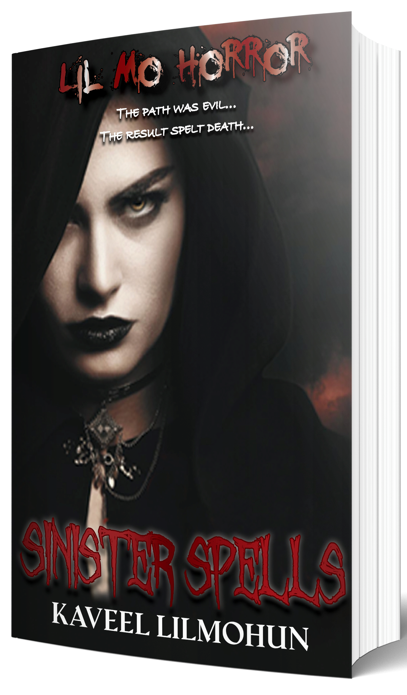

Writing has always been a passion for me. I remember back to as early as a fourteen year old teenager, reading
books and wondering. What if they ended differently?
What if I controlled the endings? What if?
Needless to say I started a few books back then but wrote for a completely different audience (kids) but I only
managed to complete one manuscript which was lost between crashing PCs alongside with other uncompleted
manuscripts.

Lil Mo Horror
Sinister Spells
Meet Swara, a nineteen year old teenager who has lost her best friend, and secret crush. Unable to deal with her pain flees her city to start life afresh in a new one.
Still, haunted by the memories of her lost mate, she manages to meet new people, new friends and things seem to all be going fine until she decides to return home for some quality time with her family. Sounds pretty harmless and fun right? WRONG!
When Swara arrives home she is contacted by her best friend's mum, Mrs. Bose who wants to hand her something. A book. A token which she can hold dear and preserve Karthik's memory. Sounds like a sweet gesture, till Swara pays her a visit and discovers her real plans.
Mrs. Bose plans to resurrect her son and all she needs is a partner who believes in the cause. Someone who also had a close tie to Karthik and guess who the lucky nominee is?
The ritual is simple ... spill some blood...chant some words... nothing major right... How far would you go to bring your best friend back from the dead? Are the lines between reality and fantasy metres apart or closely blurred? How far can someone go to hold you to promise? Swara is about to find out... and so will you.
FAQ
It started when I took Drama class in highschool . That point towards the end of grade 9 when you are sitting
there confused about where you want to go in life because it does not fit into what the world or others may
expect of you.
Drama was my way of escaping from what people believed the real world was like. Why? Because in drama you could
be anyone you wanted to be. You could be courageous , bold, even if your personality was a shy and quiet little
kid.
Going fourth I soon discovered my acting was okayish but a lot of my classmates and teachers had extreme praise
for one thing .... My writing!
So , I wrote and wrote scripts , something that really didn't feel like hard work for me, WHY? Because it wasn't
a job. It was me expressing and creating art.
Yes, after highschool, after drama was over. I tried my hand at a book aimed at teenagers but stopped it
somewhere down the path and forgot about it.
When I wrote back then, those were stories that I planned to just show friends or family... maybe even keep them
for myself. I didn't plan on publishing them.
I wrote because I felt the desire to.
Years later I found myself in a job that I didn't have much passion for and found myself wanting more.
Writing came to my mind and I thought why not pursue it? Why not make it a career... So , I quitted my job and
went on to follow my dream .
I never looked back nor do I have any regrets.
Years Both! It is a stand alone story but yes it is part of a series. The books , depending on the nature, will
fall into the category of Lilmohorror or Lilmothriller.
No they are not separate series. I found that if a book is horror , I should term it as such and the same goes
for thriller.
For now the book will be available in Paperback and as an ebook.
However, this doesn't mean that I will not consider doing a hardcover version and an audiobook version.
It is all dependent on what my readers want.
Why not? The book definitely has room for a part two , all my books do.
If there is a demand you will definitely see a part 2.
I have completed seven. Six however need to be edited. Editing does take time though.
Yes, I am working on book eight, nine and ten. I move between them depending on the ideas I get.
No way!
Futurte Projects
I am currently working on book eight , nine and ten simultaneously. I am at the beginning stages for all three books. I hopped between the three books as I am inspired by ideas relevant to those individual titles. I tend to write an idea when it immediately comes to mind so I can draft the best chapter while it's still fresh in my head. I am currently editing my second book which will fall under the Lilmothriller banner. I am planning to release it towards the end of 2020 or early next year. In terms of content the second book has been completed. I plan to release a minimum of two books , with a maximum of four books yearly. For more information keep checking the website as I will be updating it regularly.